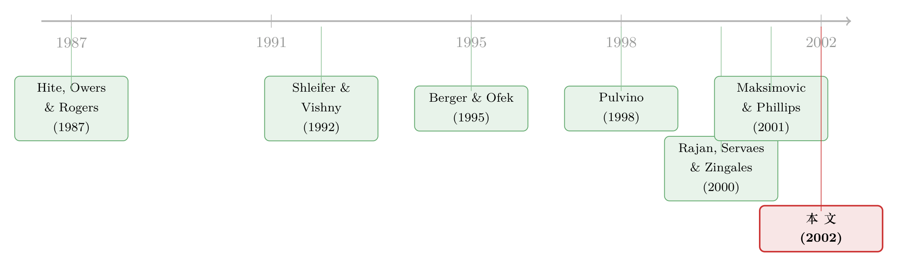

想卖的不是它，能卖的才是它——资产的「流动性」如何决定一家公司拆掉哪块业务
本文读的是 Schlingemann, Stulz & Walkling (2002, Journal of Financial Economics)：一家想「瘦身」的公司，到底会不会真的卖掉一块业务、又会卖掉哪一块，关键并不只看哪块业务该卖，而看哪块业务卖得掉。资产所在行业的「市场流动性」越高，这块业务越容易被剥离——以至于出现一个反直觉的结论：流动性最差的那块业务，被卖掉的概率反而低于公司里表现最好的那块。
1 引言：一半的「瘦身」公司，其实什么都没卖
公司金融里有一个被讲了无数遍的故事：一家多元化的公司，业务铺得太开、内部资本市场配错了钱、被市场打上了「多元化折价（diversification discount）」的标签，于是它要「聚焦（focusing）」——砍掉边角业务，回到自己最擅长的主业。文献给这种聚焦行为找了三条经典动机：把资产交给最会经营它的人（效率解释）、通过降低多元化程度让公司更高效（聚焦解释）、以及卖资产来缓解融资约束（融资解释）。
故事到这里都很顺。可作者在数据里发现了一个别扭的事实：在所有「减少了报告业务分部数量」的公司里，大约有一半根本没有卖掉任何一块业务。它们停止单独披露某个分部，却只是在内部把它合并、重组掉了，并没有真正把资产卖给外人。
这就奇怪了。如果一家公司有充分的基本面理由去聚焦——它是个糟糕的多元化者、又缺钱——那它为什么不干脆把那块业务卖了，既能改善业绩又能筹到现金？为什么有的公司说卖就卖，而另一些「条件几乎一模一样」的公司，却只能在自家屋里搬搬家具？
作者给出的答案，简单到几乎被整个文献忽略了：因为不是所有想卖的资产都卖得掉。
2 一个被遗忘的变量：资产也有「流动性」
我们太习惯于在金融市场里谈流动性了——买卖价差、市场深度、成交量。可微观结构那一整套工具，到了「公司资产」这个市场上全都失灵了。这里没有做市商替你囤着一堆「业务分部」等着撮合，你既报不出 bid–ask spread，也量不出 market depth。
但市场的本质没变：要成交，就得有买家和卖家。
公司资产没有一个集中交易的场所。一家想卖掉某块业务的公司，必须自己去找买家。如果这块资产所在的市场是活跃的、流动的，买家俯拾皆是，公司就能按接近其现金流现值的价格把它卖出去；可如果这个市场不流动，卖方就得给出一个「流动性折扣（liquidity discount）」去引诱买家入场——而一旦这个折扣压得太低，跌破了卖方的保留价格，这笔买卖干脆就不会发生。这正是 Shleifer 和 Vishny (1992) 那篇经典论文的核心机制：资产的清算价值，取决于此刻有没有「手头宽裕、又懂行」的潜在买家。
于是作者提出了两个层层递进的假设。
首先，从单块资产的角度看——既然公司聚焦是为了改善业绩和筹钱，而「卖任何一块与主业无关的资产」都能达到这个目的，那么当公司可以挑着卖时，它会优先卖掉相对更流动的那块。作者称之为资产流动性假设（asset liquidity hypothesis）。
接着，一个自然的问题是：不是所有想卖的公司都能如愿成交。于是从整个公司的角度看——在「确实需要剥离」这个前提下，手里握着更流动资产的公司，更有可能真的卖成。作者称之为公司流动性假设（firm liquidity hypothesis）。
这两个假设，恰好对上了引言里那个别扭的事实：真正区分「卖成了的公司」和「只能内部重组的公司」的，也许根本不是它们的财务基本面，而是它们手里那堆资产到底好不好脱手。
3 识别策略：怎么给「公司资产」称一称流动性
要检验这两个假设，作者需要四样东西：一组聚焦公司、一组对照公司、关于「卖掉了什么、留下了什么」的分部数据，以及——最棘手的——一把能量出资产流动性的尺子。
怎么量流动性？ 既然 bid–ask spread 用不了，作者沿用 Shleifer–Vishny 的思路：一个行业里成交量越大，说明这个行业的资产越容易脱手，卖方需要付出的折扣越小。于是他们用行业层面的并购成交量来代理资产流动性。具体地，某个行业（按两位数 SIC 码划分）的流动性指数，是这个行业里公司资产的成交总值，除以该行业的总资产：
$$ L_{j} \;=\; \frac{V_{j}}{A_{j}} $$
这里 \(V_{j}\) 是行业 \(j\) 中公司资产交易的总价值（剔除掉本研究分析的那些被剥离的分部，避免循环），\(A_{j}\) 是该行业的总资产。一个分部的流动性，就用它所在行业的 \(L_j\) 来近似；而一家公司的流动性指数，则是它各个分部流动性指数的资产加权平均：
$$ L_{i} \;=\; \sum_{k} w_{ik}\, L_{j(k)} $$
其中 \(w_{ik}\) 是分部 \(k\) 在公司 \(i\) 总资产中的权重。这样，作者就能把一家公司看成「一篮子分部」，并衡量这一篮子里每块资产所在市场的冷热。
怎么构造样本与对照？ 作者从 1979–1994 年间首次减少报告分部数量的公司出发。按 SFAS No. 14，占合并销售额 10% 以上的分部必须单独披露，这些信息来自 Compustat 的全覆盖行业分部库（CISF）。剔除金融业（SIC 6000–6999）、受管制行业（4900–4999）、ADR 以及资产低于 1 亿美元的公司后，剩下 325 家公司。
关键的一步在于把这 325 家公司一分为二。作者用 LEXIS-NEXIS 一家一家地去核：如果某家公司「分部减少」的同时，财经媒体上确实报道了一笔对应的剥离交易，它就被归为剥离公司（divesting firm），共 168 家；如果查不到任何对应交易，它就被归为中止披露公司（discontinuing firm），共 157 家。为防止「其实悄悄卖了、只是我们没查到」，作者还去 SDC 并购库里复核了中止披露公司，没有发现遗漏的交易。
这套「剥离 vs. 中止披露」的切分，正是本文识别的精妙所在：这两类公司有着同样的聚焦冲动，区别只在于——一类卖成了，一类没卖成。
至于非聚焦对照公司：对每一个样本公司减少分部的年份 \(t\)，作者从 Compustat 里挑出在 \(t-1\) 年处于同一销售额十分位、拥有同样分部数量、但在 \(t\) 年没有减少分部的公司，取它们的均值作为基准（要求至少 5 家可比公司）。这样就尽量剥离掉了「规模 + 多元化程度」的干扰。
4 数据
样本是 1979–1994 年间首次减少报告分部数的 325 家公司（168 家剥离、157 家中止披露），观测单位是公司—年。由于只取「首次」减少，样本量随年份递减，1981 年最多，有 38 例。从「卖了几块」来看，剥离公司里 142 家只卖了一块分部、22 家卖了两块、4 家卖了三块。一个有意思的对照是：中止披露公司平均停止报告 2.43 个分部，而剥离公司只停止报告 1.23 个——后者的动作要「外科手术」得多。从行业看，绝大多数样本集中在制造业（两位数 SIC 20–39），325 家里有 265 家（81.7%）落在这个区间。
5 主要结果：基本面分不开它们，流动性能
5.1 剥离公司确实有「该卖」的理由
先看剥离公司和对照公司的差异（这一比较回答的是「为什么有些多元化公司去聚焦、有些不去」）。结果两条经典解释都成立：
- 它们是糟糕的多元化者。 用 Berger 和 Ofek (1995) 的超额价值（excess value）衡量，剥离公司的中位数是
-0.246，对照公司是-0.108，差额-0.140（p = 0.016）——剥离公司背着明显更大的多元化折价。Tobin's q 也更低（1.089vs1.243，差-0.127，p = 0.023）。 - 它们更像缺钱。 剥离公司投资极少：资本开支／销售额只有
0.050，几乎只有对照公司（0.084）的一半；现金／资产是0.031对0.063，又是一半；销售增长、资产增长、现金流／销售额、股利收益率全都显著更低。
唯一的反直觉点是：剥离公司的负债／资产（0.540）反而低于对照公司（0.611，差 -0.080，p = 0.001）——明明看起来缺钱，杠杆却更低。作者的解读是，这恰恰说明它们是受信用约束的公司：不是不想借，是借不动。综合起来，剥离公司是一群「多元化没做好、又被信贷掐着脖子」的公司。到这里，效率／聚焦／融资三套解释配合得天衣无缝。
（关于「多元化折价是不是真由资产配错引起」这条平行的争论，可参见《拆开，是为了把「不一样」分开——多元化折价里那笔被分拆验证的账》。）
5.2 反转：基本面分不开「卖成的」和「没卖成的」
但真正关键的一步，是把剥离公司拿去和中止披露公司比——这两类公司都想聚焦，区别只在卖没卖成。
于是反转出现了：在几乎所有传统会计指标上，它们都没有显著差异。 增长率、投资、超额价值、q、杠杆、现金、盈利能力、股利……一个个比过去，剥离公司与中止披露公司统计上无从分辨（唯一勉强显著的是剥离公司的股权市值略大，差 0.528，p = 0.070）。中止披露公司同样投资得很少、资本开支增长得很慢——它们看起来和剥离公司一样「该卖」，可它们就是没卖。
作者进一步上了 logit 回归来确认（Table 3）。把剥离公司对照普通多元化公司时，现金流／销售额等变量显著为负、模型能区分两者；可一旦把剥离公司对照中止披露公司（Table 3 Panel B），所有系数都不显著，伪 \(R^2\) 低到 0.12%–0.63%。换句话说，聚焦解释和融资解释，根本无法回答「为什么有的聚焦公司卖成了、有的没卖成」这个问题。
这正是全文的张力所在：基本面解释在「该不该聚焦」这一层很有用，到了「能不能卖成」这一层却彻底失语。那么，是什么填上了这个缺口？
5.3 流动性，正好填上了这个缺口
答案就是流动性。作者发现：卖成了的聚焦公司，其流动性指数显著高于没卖成的聚焦公司。 同样想瘦身，手里资产更好脱手的那批人，更有可能真的把资产卖出去——这正是公司流动性假设的直接证据。基本面把它们划成了「同类」，而流动性把它们的命运分了开。
接着，在「确实卖了」的前提下，作者再问：卖的是哪一块？ 结果是：在控制了分部业绩和其他分部特征之后，流动性指数更高的分部，被剥离的概率更高——这是资产流动性假设的证据。公司不是挑「最该卖的」那块卖，而是挑「最卖得掉的」那块卖。
5.4 那个最扎眼的结论
把这两件事推到极致，就得到了摘要里那句最反直觉的话。作者做了一场「赛马」：让流动性和业绩这两个决定「卖哪块」的因素直接对撞，结果是——
流动性最差的那块业务，被剥离的概率，低于公司里表现最好的那块；而表现最差的那块业务，被剥离的概率，又低于市场流动性最高的那块。
读两遍你才能咂摸出它的分量：哪怕一块业务表现糟糕、最「该」被卖掉，只要它所在的市场太冷清、卖不出价，它就被留下了；反过来，哪怕一块业务表现不错，只要它好脱手，它也可能先被卖掉。「能卖」压过了「该卖」。 资产的流动性，不只是交易的背景条件，它本身就是塑造重组结果的一只手。
（同一只手在别处也现过身：当一家缺钱的公司发现核心资产卖不动时，它会怎样靠变卖更易脱手的家底来续命，见《现金只有 330 万，却烧了六年：一家「明星公司」是怎样靠『卖家底』续命的》。）
6 文献脉络
这条研究的起点，是把「公司资产」当成一个真实的市场来看。最早的实证奠基来自 Hite、Owers 和 Rogers (1987) 对企业间资产买卖与整体清算的研究——原来分部、工厂、子公司，是可以像商品一样被交易的。但真正把「流动性」这个词钉进这个市场的，是 Shleifer 和 Vishny (1992)：当资产的天然买家自己也陷入困境时，资产只能贱卖给外行，于是清算价值内生地随行业景气而起落——「火线甩卖（fire sale）」由此有了均衡含义。Pulvino (1998) 用商业飞机的二手交易，给这套理论提供了最干净的微观证据。

与此并行的，是「公司为什么要聚焦」这条线：Comment 和 Jarrell (1995)、John 和 Ofek (1995) 记录了聚焦与价值的关系，Berger 和 Ofek (1995) 给出了被引用无数次的「多元化折价」度量，Berger 和 Ofek (1999) 又系统刻画了再聚焦项目的成因与后果；而 Lang、Poulsen 和 Stulz (1994) 则把卖资产与「管理层自利、靠出售筹钱」联系起来。再往后，Rajan、Servaes 和 Zingales (2000) 和 Scharfstein、Stein (2000) 把矛头转向内部资本市场的低效配置，Maksimovic 和 Phillips (2001) 则直接研究「谁在这个公司资产市场里买卖、收益从何而来」。
本文 (2002) 站在这两条线的交汇处：它不否认聚焦与融资的动机（那是「该不该卖」），但它指出，这些动机解释不了「能不能卖成、卖了哪一块」，而填补这个缺口的，正是 Shleifer–Vishny 那条被冷落已久的流动性渠道。它把宏观的「资产市场流动性」第一次具体地落到了单个公司、单块分部的重组决策上。
（关于「拆公司」这件事的另一面——分拆如何改变内部投资与激励，可参见《拆开来看，钱才流到对的地方——用「分拆」给内部资本市场做一次活体解剖》与《拆掉一家公司，是为了让老板「坐不住」》。）
7 评论与延伸（Q&A + 研究方向）
(a) 几个可能的疑问
Q：用「行业并购成交量／行业总资产」来代理资产流动性，会不会本身就内生于景气？
这是最该担心的一点。行业成交活跃，可能同时反映了流动性高和该行业正处于景气／重组潮，而景气又会独立地影响公司卖不卖。作者剔除了被研究分部本身的交易以避免最直接的循环，并在回归里控制了分部业绩；但「行业冲击同时驱动流动性与剥离决策」这条通道，仍难完全排除——这也是后来 Mitchell–Mulherin、Maksimovic–Phillips 一脉强调「行业冲击」的原因。
Q：剥离公司杠杆反而更低，这不是和「缺钱」矛盾吗？
表面矛盾，实则一致。作者的解读是：剥离公司不是「主动加杠杆」的公司，而是想借却借不到的受信用约束公司——低负债、低现金、低股利、低投资放在一起，画的是一张「信贷被掐住」的脸，而不是「财务保守」的脸。
Q：会不会是中止披露公司其实卖了、只是没被新闻抓到，从而污染了对照组？
作者查了 SDC 并购库和 93 家公司的年报来堵这个漏洞，没发现对应的分部剥离交易；并明确说明，即便把少数报告了资产出售的公司重新归类，结论也不变。这是本文识别上做得比较扎实的地方。
Q：「卖更流动的、留更不流动的」会不会只是因为流动的资产恰好也是更差的资产？
正因如此，作者才在分部层面同时放进业绩和流动性做「赛马」。结论恰恰是两者各自独立起作用，甚至流动性强到能压过业绩——流动性最差但表现最好的分部反而被留下。这说明结果不是「流动 = 该卖」的同义反复。
Q：这和「火线甩卖」是一回事吗？
机制同源（都来自 Shleifer–Vishny 的买方稀缺），但落点不同。火线甩卖讲的是困境卖方被迫低价成交；本文讲的是流动性反过来决定了交易发不发生、以及发生在哪块资产上。它把「价格折扣」翻译成了「成交概率」和「资产选择」。
Q：样本停在 1994 年、且集中在制造业，外推性如何？
这是诚实要打的折扣。
81.7%的样本在制造业，结论对服务业、轻资产行业未必成立；分部披露口径（SFAS 14 的 10% 阈值）也带来测量噪声。把它当作「制造业重组」的证据更稳妥。
(b) 几个可能的研究问题与提案
1. 把「资产流动性」搬到公司债与信用市场。 【经济故事】本文的逻辑——「能不能卖成，取决于此刻有没有买家」——几乎可以一字不改地搬到债券二级市场：一只债券能不能被基金在压力时点出清、以多大折扣出清，取决于此刻交易商和对手盘的接盘能力。Schlingemann 等人量的是「公司资产市场」的流动性，而 TRACE 时代我们能直接量「公司债市场」的流动性。 【可行性】高。用 TRACE 成交数据构造行业／评级层面的流动性指数，配合基金持仓，检验「基金在危机中先卖掉更流动的债、留下更不流动的债」是否成立——数据和识别都成熟。
2. 危机时点的「资产剥离 vs. 内部重组」分流。 【经济故事】本文用一个长样本横截面识别流动性的作用；但流动性最戏剧性的变化发生在危机里。2008、2020 这样的流动性骤降，应当把更多「想卖却卖不成」的公司推回「内部重组」。 【可行性】中。可用危机作为流动性外生收紧的冲击，做剥离概率对行业流动性敏感度的 DiD；难点在于危机同时改变了卖的意愿，需要把意愿冲击与能力冲击分开。
3. 外资买家与公司资产市场的流动性。 【经济故事】公司资产市场的「买家库」并不封闭——跨境并购意味着外资 PE 和战略买家会加厚某些行业的买方深度。当一个行业向外资开放，本地公司剥离资产的成交概率是否上升、流动性折扣是否收窄？ 【可行性】中。利用各国对外资并购管制的放松事件做准自然实验，把 Schlingemann 的流动性指数按「是否含外资买家」拆开；数据可得，识别取决于政策时点的外生性。
4. 用机器可读的交易数据重估那场「赛马」。 【经济故事】原文受限于 1994 年前的样本与分部披露噪声。今天可以用更细的资产层面交易记录（厂房、子公司、业务线）重做「业绩 vs. 流动性」的赛马，看那个反直觉的排序是否在更干净的数据里依然成立。 【可行性】高。SDC／私有交易数据库 + 现代分部数据足以支撑，主要工作量在资产匹配。
8 我的判断
这篇论文的贡献，在于它把一个几乎人人都默认、却几乎没人正式检验的常识——「想卖不等于卖得掉」——变成了一个可识别、可量化的实证命题，并且找到了一个极其干净的切口：让「卖成的聚焦公司」和「没卖成的聚焦公司」对峙，于是基本面解释的边界一下子暴露了出来，流动性这只手才显形。那个「流动性最差的业务比表现最好的业务更不容易被卖掉」的结论，是少有的、既反直觉又站得住的实证发现。
要打的折扣有两处。其一是流动性度量的内生性：行业成交量同时承载着「流动性」和「行业景气／重组潮」两重信息，本文虽做了剔除与控制，但没有一个真正外生的流动性冲击来钉死因果——这道坎要靠后来的危机自然实验或政策实验去补。其二是外推性：样本停在 1994 年、八成在制造业、且依赖 SFAS 14 的分部披露口径，结论更适合读作「制造业重组」的证据。
我接下来最想看到的，是把这套「成交概率取决于买方深度」的逻辑搬到今天有高频成交数据的市场去重做——尤其是公司债二级市场。Schlingemann 等人在 2002 年只能用粗糙的行业成交量近似流动性；而在 TRACE 之后，我们终于有机会把「能不能卖成、以多大折扣卖成」一笔一笔地看清楚。流动性从来不是交易的背景，它就是结果本身——这篇二十多年前的论文，把这句话第一次讲到了单块资产的层面。
参考文献
- Berger, P.G., Ofek, E. (1995). Diversification's effect on firm value. Journal of Financial Economics 37(1), 39–65.
- Berger, P.G., Ofek, E. (1999). Causes and consequences of corporate refocusing programs. Review of Financial Studies 12(2), 311–345.
- Comment, R., Jarrell, G.A. (1995). Corporate focus and stock returns. Journal of Financial Economics 37(1), 67–87.
- Hite, G.L., Owers, J.E., Rogers, R.C. (1987). The market for interfirm asset sales: partial sell-offs and total liquidations. Journal of Financial Economics 18(2), 229–252.
- John, K., Ofek, E. (1995). Asset sales and increase in focus. Journal of Financial Economics 37(1), 105–126.
- Lang, L.H.P., Poulsen, A., Stulz, R.M. (1994). Asset sales, firm performance, and the agency costs of managerial discretion. Journal of Financial Economics 37(1), 3–37.
- Maksimovic, V., Phillips, G. (2001). The market for corporate assets: who engages in mergers and corporate sales and are there gains? Journal of Finance 56(6), 2019–2065.
- Pulvino, T. (1998). Do asset fire sales exist? An empirical investigation of commercial aircraft transactions. Journal of Finance 53(3), 939–978.
- Rajan, R., Servaes, H., Zingales, L. (2000). The diversification discount and inefficient investment. Journal of Finance 55(1), 35–80.
- Scharfstein, D.S., Stein, J.C. (2000). The dark side of internal capital markets: divisional rent-seeking and inefficient investment. Journal of Finance 55(6), 2537–2564.
- Schlingemann, F.P., Stulz, R.M., Walkling, R.A. (2002). Divestitures and the liquidity of the market for corporate assets. Journal of Financial Economics 64(1), 117–144.
- Shleifer, A., Vishny, R.W. (1992). Liquidation values and debt capacity: a market equilibrium approach. Journal of Finance 47(4), 1343–1366.